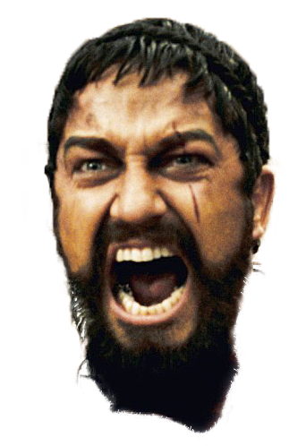
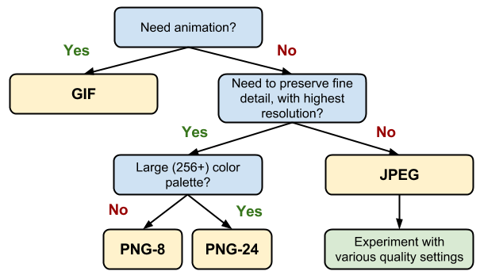
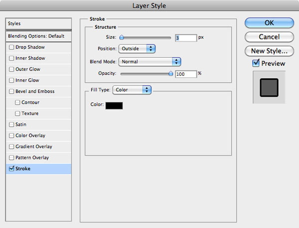

From
Front-End Developer
To
Web Desingers
Андрей Полищук, ex-Malkos, CoreValue.
Какой тип файлов выбрать?
Что не стоит использовать?
- .jpg/png
- .pdf
- ...
- Illustrator?
Организация работы
- Не плоди лишних файлов
- Исходники храни в папке /source/
- Паттерны для бесшовной текстуры
- Несистемные шрифты
- Иконки
- Изображения использованые в макете
- Называй файлы с учетом версии
- Называй файлы по-английски или транслитом
UI kit
Если проект большой тебе точно нужен UI kit
- UIkit.psd
- base.psd
- General.psd
- THIS IS GENERAL!!!!!!!.psd

Экспорт файлов
- Перед экспортом проверь орфографию
- Save for Web & Devices…
- Разумное JPEG-качество при экспорте
Какой формат выбрать для сохранения?

Слои документа
- Отдельные элементы - отдельные слои
- Не склеивай слои без необходимости
- Используй папки
- Давай слоям названия
- Задавай глобальные элементы
- Не используй режим наложения слоев (Blend Mode)
Не скрывай слои, что нужно сделать.
Верстальщик сверстает все, что увидит.
Для активных елементов показывай состояния:
- обычное,
- наведенное,
- нажатое,
- для ссылок посещенное
Особенности дизайна
- Единицы измерения - px
- Разрешение холста - 72px/inch
- Используй сетку
- Переиспользуй элементы и их отступы
- На активные элементы добавляй слой cursor: pointer;
- Комментируй то, что нарисовал
- Описывай анимации
Используй эффекты у слоя:
- Для тени
- Для градиента (линейный, радиальный)
- Для обводки
- Для заливки

Шрифты
- Безопасные шрифты
- Чем меньше не стандартных, тем лучше
- Если не стандартный, то как можно меньше гарнитур
- Используй Google Fonts
Безопасные шрифты
Serif Fonts - 3
- Georgia, serif
- "Palatino Linotype", "Book Antiqua", Palatino, serif
- "Times New Roman", Times, serif
Monospace Fonts - 2
- "Courier New", Courier, monospace
- "Lucida Console", Monaco, monospace
Sans-Serif Fonts - 8
- Arial, Helvetica, sans-serif
- "Arial Black", Gadget, sans-serif
- "Comic Sans MS", cursive, sans-serif
- Impact, Charcoal, sans-serif
- "Lucida Sans Unicode", "Lucida Grande", sans-serif
- Tahoma, Geneva, sans-serif
- "Trebuchet MS", Helvetica, sans-serif
- Verdana, Geneva, sans-serif
сглаживания шрифтов
нет
На Mac есть -webkit-font-smoothing: antialised; другие значения плохи
Ещё про текст
- Не растрируй текст
- Кегль шрифта задавай целым числом пикселей (zoom макета)
- Используй реальный текст (заголовки, ссылки)
- Учитывай разное количество текста в элементах
Адаптивные макеты
- Нужно несколько макетов
- Продумывай эволюцию блоков
- Пожлайста, не меняй последовательность блоков
Touch устройства
Отсутсвует курсор, но есть касания!
- Минимальный размер активного элемента 28*28px
- Отсутсвует hover
- Перекрывающиеся области
Вдохновение
Где искать?
Конечно сайты